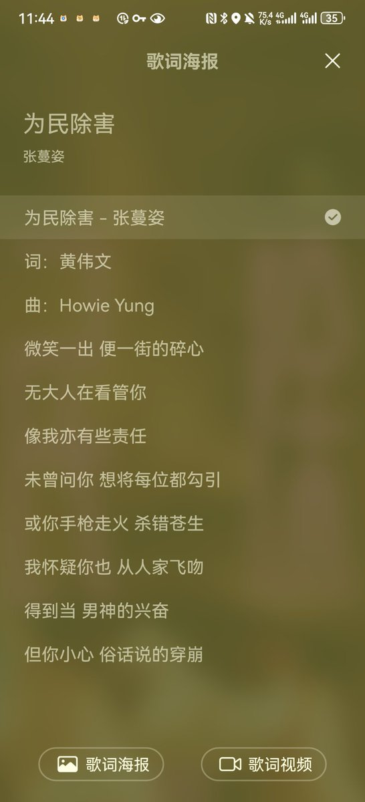
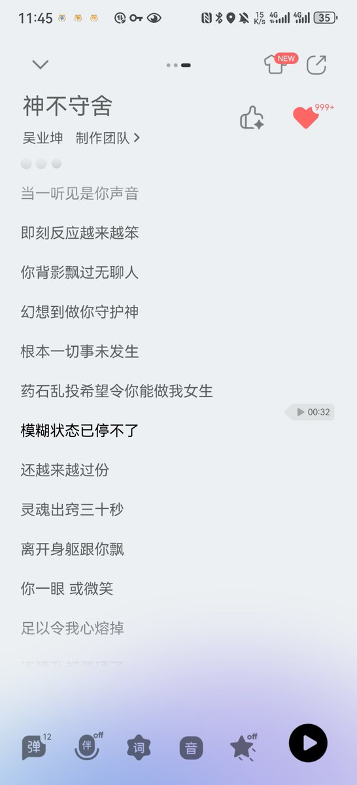

Sacabambaspis
@youlingjiayu
@spectatengageR 太可爱了……


engage:D
@spectatengageR
最近写不出crush记录，词语匮乏句子涣散脑袋空空，不过一直在听东西，思绪和心都像杨絮乱飞。
想变成更好的人，也更好地匹配上Crush。这大概也是她的魔力之一，比起纯粹让人掉进温柔乡，她暗合着我对理想关系的盼望，让我自己蹦哒，在普通的日子里唱起歌来。🥺🥺🥺🥺 https://t.co/JRnw7mO9c9